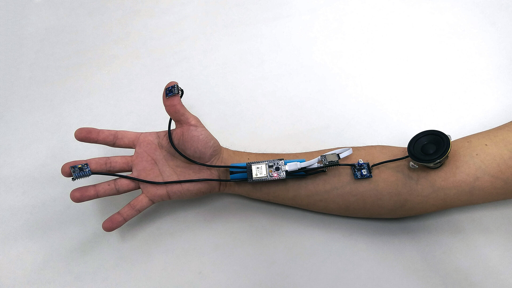

Hardware
Sensores
Cada uno de los módulo está equipado con una serie de sensores capacitivos diseñados para detectar la presencia de las manos de participantes a través de pequeñas superficies.
Además, incorpora un sensor micro electromecánico que incluye un acelerómetro y un giróscopo de tres ejes para medir movimientos y rotaciones en el espacio.
También integra un magnetómetro de tres ejes para detectar la orientación con respecto al campo magnético terrestre.
Procesamiento y memoria
La unidad de procesamiento y memoria consta de un microcontrolador ESP32, que incorpora tecnología Wi-Fi. Esta conexión inalámbrica Wi-Fi permite enviar y recibir datos para ajustar los parámetros sonoros en tiempo real. Asimismo, permite utilizar información proveniente de otros dispositivos o redes externas, como datos disponibles en Internet, para enriquecer la experiencia.
Actuadores
Los módulos ofrecen dos formas de producir sonido, las cuales pueden controlarse simultáneamente. La primera opción es mediante un sintetizador de audio con un conversor digital analógico de 8 bits. La otra consiste en la reproducción de pistas de audio grabadas en una tarjeta microSD, con una calidad de 48KHz a 24 bits y una capacidad de almacenamiento de hasta 32 GB.
Prototipos de módulos sonoros
Aquí se presentan dos prototipos de módulos sonoros e interactivos desarrollados como parte de la investigación. Estos ejemplifican diferentes disposiciones físicas de los elementos de cada módulo.

